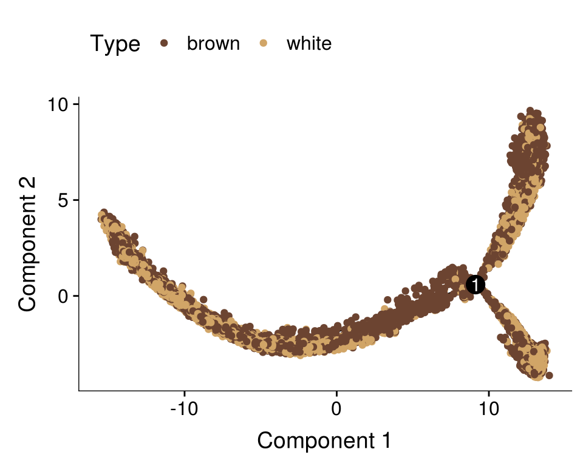
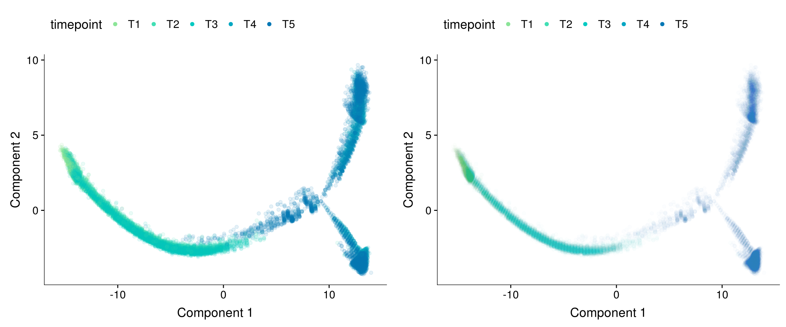
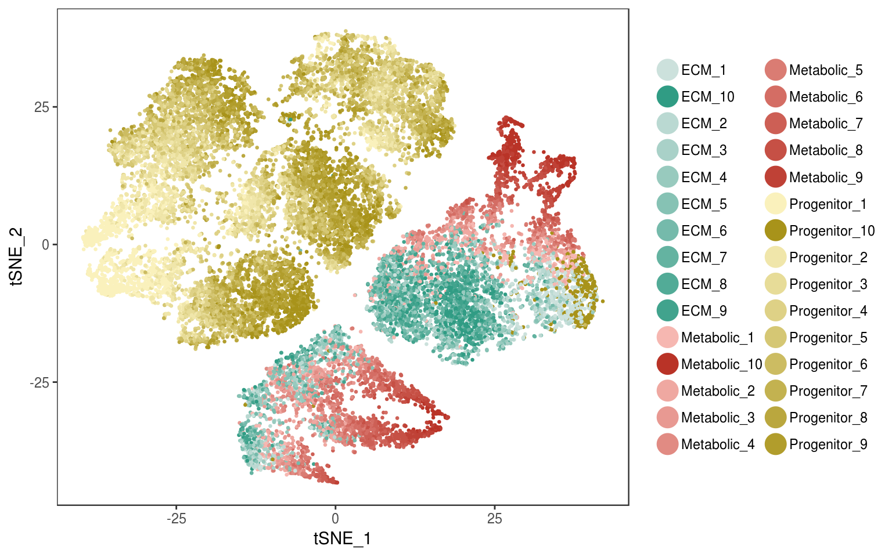

R Notebook
Last updated: 2019-04-04
Checks: 6 0
Knit directory: 10x-adipocyte-analysis/
This reproducible R Markdown analysis was created with workflowr (version 1.2.0). The Report tab describes the reproducibility checks that were applied when the results were created. The Past versions tab lists the development history.
Great! Since the R Markdown file has been committed to the Git repository, you know the exact version of the code that produced these results.
Great job! The global environment was empty. Objects defined in the global environment can affect the analysis in your R Markdown file in unknown ways. For reproduciblity it’s best to always run the code in an empty environment.
The command set.seed(20181026) was run prior to running the code in the R Markdown file. Setting a seed ensures that any results that rely on randomness, e.g. subsampling or permutations, are reproducible.
Great job! Recording the operating system, R version, and package versions is critical for reproducibility.
Nice! There were no cached chunks for this analysis, so you can be confident that you successfully produced the results during this run.
Great! You are using Git for version control. Tracking code development and connecting the code version to the results is critical for reproducibility. The version displayed above was the version of the Git repository at the time these results were generated.
Note that you need to be careful to ensure that all relevant files for the analysis have been committed to Git prior to generating the results (you can use wflow_publish or wflow_git_commit). workflowr only checks the R Markdown file, but you know if there are other scripts or data files that it depends on. Below is the status of the Git repository when the results were generated:
Ignored files:
Ignored: figures/
Ignored: output/bulk_analysis/
Ignored: output/markergenes/
Ignored: output/monocle/
Ignored: output/seurat_objects/
Ignored: output/velocyto/
Ignored: output/wgcna/
Ignored: tables/
Untracked files:
Untracked: 10x-180831-figures.Rmd
Untracked: Rplots.pdf
Untracked: analysis/.ipynb_checkpoints/velocyto_notebook_180831-checkpoint.ipynb
Untracked: analysis/10-180831-monocle-per-depot.Rmd
Untracked: analysis/10x-180831-BEAM-heatmap.Rmd
Untracked: analysis/10x-180831-pseudotime.Rmd
Untracked: code/BEAM-heatmaps.R
Untracked: code/colors.R
Unstaged changes:
Modified: analysis/10x-180831-colors.Rmd
Modified: analysis/10x-180831-general-analysis.Rmd
Modified: analysis/velocyto_notebook_180831.ipynb
Modified: code/compute-genelists-monocle-depots.R
Modified: code/preprocess-data.R
Modified: code/run-monocle.R
Note that any generated files, e.g. HTML, png, CSS, etc., are not included in this status report because it is ok for generated content to have uncommitted changes.
These are the previous versions of the R Markdown and HTML files. If you’ve configured a remote Git repository (see ?wflow_git_remote), click on the hyperlinks in the table below to view them.
| File | Version | Author | Date | Message |
|---|---|---|---|---|
| Rmd | 7ef9f33 | Pytrik Folkertsma | 2019-04-04 | updated BEAM analysis |
| html | b3cc370 | Pytrik Folkertsma | 2019-04-04 | Build site. |
| Rmd | 859bb51 | Pytrik Folkertsma | 2019-04-04 | updated BEAM analysis |
| html | 13994df | Pytrik Folkertsma | 2019-04-03 | Build site. |
| Rmd | ddbc7bc | Pytrik Folkertsma | 2019-04-03 | new heatmaps |
| html | 4d92211 | Pytrik Folkertsma | 2019-04-03 | Build site. |
| Rmd | 7f0e856 | Pytrik Folkertsma | 2019-04-03 | new heatmaps |
| html | b064e18 | Pytrik Folkertsma | 2019-04-03 | Build site. |
| Rmd | d828f8b | Pytrik Folkertsma | 2019-04-03 | updated monocle notebook |
| Rmd | 03050a1 | Pytrik Folkertsma | 2019-03-28 | analysis updates |
| html | 221a47f | Pytrik Folkertsma | 2019-01-04 | docs |
| Rmd | ab801ec | Pytrik Folkertsma | 2019-01-04 | updated notebooks |
library(Seurat)Loading required package: ggplot2Loading required package: cowplot
Attaching package: 'cowplot'The following object is masked from 'package:ggplot2':
ggsaveLoading required package: Matrixlibrary(monocle)Loading required package: BiobaseLoading required package: BiocGenericsLoading required package: parallel
Attaching package: 'BiocGenerics'The following objects are masked from 'package:parallel':
clusterApply, clusterApplyLB, clusterCall, clusterEvalQ,
clusterExport, clusterMap, parApply, parCapply, parLapply,
parLapplyLB, parRapply, parSapply, parSapplyLBThe following objects are masked from 'package:Matrix':
colMeans, colSums, rowMeans, rowSums, whichThe following objects are masked from 'package:stats':
IQR, mad, sd, var, xtabsThe following objects are masked from 'package:base':
anyDuplicated, append, as.data.frame, basename, cbind,
colMeans, colnames, colSums, dirname, do.call, duplicated,
eval, evalq, Filter, Find, get, grep, grepl, intersect,
is.unsorted, lapply, lengths, Map, mapply, match, mget, order,
paste, pmax, pmax.int, pmin, pmin.int, Position, rank, rbind,
Reduce, rowMeans, rownames, rowSums, sapply, setdiff, sort,
table, tapply, union, unique, unsplit, which, which.max,
which.minWelcome to Bioconductor
Vignettes contain introductory material; view with
'browseVignettes()'. To cite Bioconductor, see
'citation("Biobase")', and for packages 'citation("pkgname")'.Loading required package: VGAMLoading required package: stats4Loading required package: splinesLoading required package: DDRTreeLoading required package: irlbalibrary(pheatmap)
source('code/colors.R')
seurobj <- readRDS('output/seurat_objects/180831/10x-180831')
cds <- readRDS('output/monocle/180831/10x-180831-monocle-monocle_genelist_T1T2T3_T4T5_res.1.5')Trajectory plots
fig <- plot_grid(ncol=1,
plot_cell_trajectory(cds, color_by='timepoint') + scale_color_manual(values=colors.timepoints, name = "Timepoint"),
plot_cell_trajectory(cds, color_by='Pseudotime'),
plot_cell_trajectory(cds, color_by='State'),
plot_cell_trajectory(cds, color_by = "State") + scale_color_manual(values=colors.states, name = "State"))
fig
plot_cell_trajectory(cds, color_by='depot') + scale_color_manual(values=colors.depots, name = 'Depots')
plot_cell_trajectory(cds, color_by='type') + scale_color_manual(values=colors.type, name = "Type")
#seurobj <- AddMetaData(seurobj, pData(cds)['State'])
plot_grid(
TSNEPlot(seurobj, group.by='State', pt.size=0.1, colors.use=colors.states),
TSNEPlot(seurobj, group.by='type', pt.size=0.1, colors.use=colors.type),
labels=c('Predicted by Monocle', 'True labels')
)
| Version | Author | Date |
|---|---|---|
| b064e18 | Pytrik Folkertsma | 2019-04-03 |
| Version | Author | Date |
|---|---|---|
| b064e18 | Pytrik Folkertsma | 2019-04-03 |
plot_grid(
TSNEPlot(seurobj, group.by='depot', pt.size=0.1, colors.use=colors.depots),
TSNEPlot(seurobj, group.by='timepoint', pt.size=0.1, colors.use=colors.timepoints),
ncol=2
)
| Version | Author | Date |
|---|---|---|
| b064e18 | Pytrik Folkertsma | 2019-04-03 |

| Version | Author | Date |
|---|---|---|
| b064e18 | Pytrik Folkertsma | 2019-04-03 |
plot_grid(
plot_cell_trajectory(cds, color_by = "timepoint") + geom_point(color='white', size=5) + geom_point(aes(colour=timepoint), alpha=0.1) + scale_color_manual(values=colors.timepoints),
plot_cell_trajectory(cds, color_by = "timepoint") + geom_point(color='white', size=5) + geom_point(aes(colour=timepoint), alpha=0.01) + scale_color_manual(values=colors.timepoints),
ncol=2
)
| Version | Author | Date |
|---|---|---|
| b064e18 | Pytrik Folkertsma | 2019-04-03 |
#seurobj <- AddMetaData(seurobj, pData(cds)['State'])
#saveRDS(seurobj, 'output/10x-180831')
#save metadata for Velocyto
#write.table(seurobj@meta.data, file='tables/10x-180831-metadata-labels.txt', sep='\t', quote=F)Ratio’s brown/white in branches
Ratio’s white/brown and depots per branch.
get_ratios <- function(col1, col2){
states <- unique(seurobj@meta.data[,col1])
values <- unique(seurobj@meta.data[,col2])
df <- as.data.frame(matrix(ncol=length(values)+1, nrow=length(states)))
colnames(df) <- c('n', values)
rownames(df) <- states
for (state in states){
n_state = length(which(seurobj@meta.data[col1] == state))
df[state, 'n'] <- n_state
#print(paste('N cells', col1, state, ':', n_state))
for (value in values){
n_state_value <- length(which(seurobj@meta.data[col1] == state & seurobj@meta.data[col2] == value))
perc_state_value <- n_state_value / n_state
df[state, value] <- round(perc_state_value, 2)
#print(paste('Ratio', value, 'in', state, ': ', round(perc_state_value, 2)))
}
}
return(df)
}get_ratios('State.labels', 'depot') n Peri Subq Visce Supra
Progenitor branch 14353 0.23 0.26 0.25 0.26
Lower branch 5476 0.17 0.32 0.36 0.16
Upper branch 3599 0.39 0.23 0.11 0.27get_ratios('depot', 'State.labels') n Progenitor branch Lower branch Upper branch
Peri 5599 0.59 0.16 0.25
Subq 6269 0.59 0.28 0.13
Visce 5986 0.60 0.33 0.07
Supra 5574 0.67 0.16 0.18get_ratios('State.labels', 'type') n brown white
Progenitor branch 14353 0.49 0.51
Lower branch 5476 0.33 0.67
Upper branch 3599 0.66 0.34get_ratios('type', 'State.labels') n Progenitor branch Lower branch Upper branch
brown 11173 0.63 0.16 0.21
white 12255 0.60 0.30 0.10BEAM
BEAM takes as input a CellDataSet that’s been ordered with orderCells and the name of a branch point in the trajectory. It returns a table of significance scores for each gene. Genes that score significant are said to be branch-dependent in their expression.
#BEAM_res <- BEAM(cds, branch_point = 1, cores = 10)
load('output/monocle/180831/BEAM_new')
BEAM_res <- BEAM_res[order(BEAM_res$qval),]
BEAM_res <- BEAM_res[,c("gene_short_name", "pval", "qval")]paste('Significant genes with q-val < 0.01:', length(BEAM_res$qval[BEAM_res$qval < 0.05]))[1] "Significant genes with q-val < 0.01: 8647"paste('Significant genes with q-val < 0.01:', length(BEAM_res$qval[BEAM_res$qval < 0.01]))[1] "Significant genes with q-val < 0.01: 7366"paste('Significant genes with q-val < 0.001:', length(BEAM_res$qval[BEAM_res$qval < 0.001]))[1] "Significant genes with q-val < 0.001: 6250"paste('Significant genes with q-val < 0.0001:', length(BEAM_res$qval[BEAM_res$qval < 0.0001]))[1] "Significant genes with q-val < 0.0001: 5523"paste('Significant genes with q-val < 0.00001:', length(BEAM_res$qval[BEAM_res$qval < 0.00001]))[1] "Significant genes with q-val < 0.00001: 5029"paste('Significant genes with q-val = 0:', length(BEAM_res$qval[BEAM_res$qval == 0]))[1] "Significant genes with q-val = 0: 271"Histograms of p-values and q-values
hist(BEAM_res$pval)
hist(BEAM_res$qval)
| Version | Author | Date |
|---|---|---|
| b064e18 | Pytrik Folkertsma | 2019-04-03 |
Filtering BEAM results on fold change
matrix <- as.matrix(seurobj@data)
calculateAvgLogFC <- function(gene){
gene <- as.character(gene)
state2 <- log1p(mean(expm1(as.numeric(matrix[gene, row.names(seurobj@meta.data)[seurobj@meta.data$State == 2]])))) # first un-log transform. then average. then logp1 again. This is all done to calculate the mean in non-log-space.
state3 <- log1p(mean(expm1(as.numeric(matrix[gene, row.names(seurobj@meta.data)[seurobj@meta.data$State == 3]]))))
return(state2-state3)
}
BEAM_signficnat_res <- BEAM_res[BEAM_res$qval < 0.05,]
BEAM_signficnat_res$avgLogFC_State2_State3 <- sapply(BEAM_signficnat_res$gene_short_name, calculateAvgLogFC)X axis = minimum log fold change.
all <- c()
values <- list()
for (i in seq(0.0, 3, by=0.1)){
fc <- abs(BEAM_signficnat_res$avgLogFC_State2_State3[abs(BEAM_signficnat_res$avgLogFC_State2_State3) >= i])
all <- c(all, fc)
values[toString(i)] <- length(fc)
}
hist(all, breaks=20, probability = F)
| Version | Author | Date |
|---|---|---|
| b064e18 | Pytrik Folkertsma | 2019-04-03 |
hist(all, breaks=20, probability = T)
lines(density(all), col='blue', lwd=2)
data.frame(fold_change=names(values), num_genes=unlist(values)) fold_change num_genes
0 0 8647
0.1 0.1 1857
0.2 0.2 791
0.3 0.3 413
0.4 0.4 249
0.5 0.5 148
0.6 0.6 93
0.7 0.7 63
0.8 0.8 45
0.9 0.9 33
1 1 27
1.1 1.1 20
1.2 1.2 18
1.3 1.3 16
1.4 1.4 11
1.5 1.5 6
1.6 1.6 5
1.7 1.7 5
1.8 1.8 5
1.9 1.9 2
2 2 1
2.1 2.1 1
2.2 2.2 1
2.3 2.3 1
2.4 2.4 0
2.5 2.5 0
2.6 2.6 0
2.7 2.7 0
2.8 2.8 0
2.9 2.9 0
3 3 0BEAM heatmap
Create heatmap of the significant genes with absolute average logFC > 0.3.
#ran in terminal because of computation time
#branched_5_0.3_2 <- plot_genes_branched_heatmap(cds[row.names(subset(BEAM_signficnat_res, abs(avgLogFC_State2_State3) > 0.3))],
# branch_point = 1,
# num_clusters = 5,
# cores = 10,
# show_rownames = T,
# return_heatmap = T,
# branch_labels = c("Upper branch", "Lower branch"),
# branch_colors = colors.states
# )load('output/monocle/180831/heatmaps')You can visualize changes for all the genes that are significantly branch dependent using a special type of heatmap. This heatmap shows changes in both lineages at the same time. It also requires that you choose a branch point to inspect. Columns are points in pseudotime, rows are genes, and the beginning of pseudotime is in the middle of the heatmap. As you read from the middle of the heatmap to the right, you are following one lineage through pseudotime. As you read left, the other. The genes are clustered hierarchically, so you can visualize modules of genes that have similar lineage-dependent expression patterns.\
for (name in names(heatmaps)){
cat('\n')
cat(paste('BEAM heatmap:', name))
#cat("#This is a heading for ", name, "\n")
gridExtra::grid.arrange(heatmaps[[name]]$ph_res$gtable)
cat('\n')
}BEAM heatmap: heatmap_logFC0.3_ncluster3
BEAM heatmap: heatmap_logFC0.3_ncluster4
| Version | Author | Date |
|---|---|---|
| b3cc370 | Pytrik Folkertsma | 2019-04-04 |
BEAM heatmap: heatmap_logFC0.3_ncluster5
| Version | Author | Date |
|---|---|---|
| b3cc370 | Pytrik Folkertsma | 2019-04-04 |
BEAM heatmap: heatmap_logFC0.3_ncluster6
| Version | Author | Date |
|---|---|---|
| b3cc370 | Pytrik Folkertsma | 2019-04-04 |
BEAM heatmap: heatmap_logFC0.3_ncluster7
| Version | Author | Date |
|---|---|---|
| b3cc370 | Pytrik Folkertsma | 2019-04-04 |
BEAM heatmap: heatmap_logFC0.3_ncluster8
| Version | Author | Date |
|---|---|---|
| b3cc370 | Pytrik Folkertsma | 2019-04-04 |
BEAM heatmap: heatmap_logFC0.4_ncluster3
| Version | Author | Date |
|---|---|---|
| b3cc370 | Pytrik Folkertsma | 2019-04-04 |
BEAM heatmap: heatmap_logFC0.4_ncluster4
| Version | Author | Date |
|---|---|---|
| b3cc370 | Pytrik Folkertsma | 2019-04-04 |
BEAM heatmap: heatmap_logFC0.4_ncluster5
| Version | Author | Date |
|---|---|---|
| b3cc370 | Pytrik Folkertsma | 2019-04-04 |
BEAM heatmap: heatmap_logFC0.4_ncluster6
| Version | Author | Date |
|---|---|---|
| b3cc370 | Pytrik Folkertsma | 2019-04-04 |
BEAM heatmap: heatmap_logFC0.4_ncluster7
| Version | Author | Date |
|---|---|---|
| b3cc370 | Pytrik Folkertsma | 2019-04-04 |
BEAM heatmap: heatmap_logFC0.4_ncluster8
| Version | Author | Date |
|---|---|---|
| b3cc370 | Pytrik Folkertsma | 2019-04-04 |
BEAM heatmap: heatmap_logFC0.5_ncluster3
| Version | Author | Date |
|---|---|---|
| b3cc370 | Pytrik Folkertsma | 2019-04-04 |
BEAM heatmap: heatmap_logFC0.5_ncluster4
| Version | Author | Date |
|---|---|---|
| b3cc370 | Pytrik Folkertsma | 2019-04-04 |
BEAM heatmap: heatmap_logFC0.5_ncluster5
| Version | Author | Date |
|---|---|---|
| b3cc370 | Pytrik Folkertsma | 2019-04-04 |
BEAM heatmap: heatmap_logFC0.5_ncluster6
| Version | Author | Date |
|---|---|---|
| b3cc370 | Pytrik Folkertsma | 2019-04-04 |
BEAM heatmap: heatmap_logFC0.5_ncluster7
| Version | Author | Date |
|---|---|---|
| b3cc370 | Pytrik Folkertsma | 2019-04-04 |
BEAM heatmap: heatmap_logFC0.5_ncluster8
| Version | Author | Date |
|---|---|---|
| b3cc370 | Pytrik Folkertsma | 2019-04-04 |
Nr of genes
print_nGene <- function(branched){
print(paste('Total number of genes:', length(branched$annotation_row$Cluster)))
for (i in 1:length(unique(branched$annotation_row$Cluster))){
cluster <- rownames(branched$annotation_row)[branched$annotation_row$Cluster == i]
print(paste('Nr of genes in cluster ', i, ': ', length(cluster), sep=''))
}
}
for (name in names(heatmaps)){
cat(paste('\n', name))
print_nGene(heatmaps[[name]])
}
heatmap_logFC0.3_ncluster3[1] "Total number of genes: 413"
[1] "Nr of genes in cluster 1: 249"
[1] "Nr of genes in cluster 2: 95"
[1] "Nr of genes in cluster 3: 69"
heatmap_logFC0.3_ncluster4[1] "Total number of genes: 413"
[1] "Nr of genes in cluster 1: 74"
[1] "Nr of genes in cluster 2: 175"
[1] "Nr of genes in cluster 3: 95"
[1] "Nr of genes in cluster 4: 69"
heatmap_logFC0.3_ncluster5[1] "Total number of genes: 413"
[1] "Nr of genes in cluster 1: 74"
[1] "Nr of genes in cluster 2: 175"
[1] "Nr of genes in cluster 3: 58"
[1] "Nr of genes in cluster 4: 69"
[1] "Nr of genes in cluster 5: 37"
heatmap_logFC0.3_ncluster6[1] "Total number of genes: 413"
[1] "Nr of genes in cluster 1: 37"
[1] "Nr of genes in cluster 2: 175"
[1] "Nr of genes in cluster 3: 58"
[1] "Nr of genes in cluster 4: 69"
[1] "Nr of genes in cluster 5: 37"
[1] "Nr of genes in cluster 6: 37"
heatmap_logFC0.3_ncluster7[1] "Total number of genes: 413"
[1] "Nr of genes in cluster 1: 37"
[1] "Nr of genes in cluster 2: 175"
[1] "Nr of genes in cluster 3: 58"
[1] "Nr of genes in cluster 4: 69"
[1] "Nr of genes in cluster 5: 26"
[1] "Nr of genes in cluster 6: 11"
[1] "Nr of genes in cluster 7: 37"
heatmap_logFC0.3_ncluster8[1] "Total number of genes: 413"
[1] "Nr of genes in cluster 1: 37"
[1] "Nr of genes in cluster 2: 45"
[1] "Nr of genes in cluster 3: 130"
[1] "Nr of genes in cluster 4: 58"
[1] "Nr of genes in cluster 5: 69"
[1] "Nr of genes in cluster 6: 26"
[1] "Nr of genes in cluster 7: 11"
[1] "Nr of genes in cluster 8: 37"
heatmap_logFC0.4_ncluster3[1] "Total number of genes: 249"
[1] "Nr of genes in cluster 1: 150"
[1] "Nr of genes in cluster 2: 53"
[1] "Nr of genes in cluster 3: 46"
heatmap_logFC0.4_ncluster4[1] "Total number of genes: 249"
[1] "Nr of genes in cluster 1: 41"
[1] "Nr of genes in cluster 2: 109"
[1] "Nr of genes in cluster 3: 53"
[1] "Nr of genes in cluster 4: 46"
heatmap_logFC0.4_ncluster5[1] "Total number of genes: 249"
[1] "Nr of genes in cluster 1: 41"
[1] "Nr of genes in cluster 2: 109"
[1] "Nr of genes in cluster 3: 25"
[1] "Nr of genes in cluster 4: 46"
[1] "Nr of genes in cluster 5: 28"
heatmap_logFC0.4_ncluster6[1] "Total number of genes: 249"
[1] "Nr of genes in cluster 1: 14"
[1] "Nr of genes in cluster 2: 109"
[1] "Nr of genes in cluster 3: 25"
[1] "Nr of genes in cluster 4: 46"
[1] "Nr of genes in cluster 5: 28"
[1] "Nr of genes in cluster 6: 27"
heatmap_logFC0.4_ncluster7[1] "Total number of genes: 249"
[1] "Nr of genes in cluster 1: 14"
[1] "Nr of genes in cluster 2: 109"
[1] "Nr of genes in cluster 3: 25"
[1] "Nr of genes in cluster 4: 26"
[1] "Nr of genes in cluster 5: 28"
[1] "Nr of genes in cluster 6: 20"
[1] "Nr of genes in cluster 7: 27"
heatmap_logFC0.4_ncluster8[1] "Total number of genes: 249"
[1] "Nr of genes in cluster 1: 14"
[1] "Nr of genes in cluster 2: 109"
[1] "Nr of genes in cluster 3: 25"
[1] "Nr of genes in cluster 4: 26"
[1] "Nr of genes in cluster 5: 22"
[1] "Nr of genes in cluster 6: 6"
[1] "Nr of genes in cluster 7: 20"
[1] "Nr of genes in cluster 8: 27"
heatmap_logFC0.5_ncluster3[1] "Total number of genes: 148"
[1] "Nr of genes in cluster 1: 85"
[1] "Nr of genes in cluster 2: 35"
[1] "Nr of genes in cluster 3: 28"
heatmap_logFC0.5_ncluster4[1] "Total number of genes: 148"
[1] "Nr of genes in cluster 1: 16"
[1] "Nr of genes in cluster 2: 69"
[1] "Nr of genes in cluster 3: 35"
[1] "Nr of genes in cluster 4: 28"
heatmap_logFC0.5_ncluster5[1] "Total number of genes: 148"
[1] "Nr of genes in cluster 1: 16"
[1] "Nr of genes in cluster 2: 69"
[1] "Nr of genes in cluster 3: 20"
[1] "Nr of genes in cluster 4: 28"
[1] "Nr of genes in cluster 5: 15"
heatmap_logFC0.5_ncluster6[1] "Total number of genes: 148"
[1] "Nr of genes in cluster 1: 3"
[1] "Nr of genes in cluster 2: 69"
[1] "Nr of genes in cluster 3: 20"
[1] "Nr of genes in cluster 4: 28"
[1] "Nr of genes in cluster 5: 15"
[1] "Nr of genes in cluster 6: 13"
heatmap_logFC0.5_ncluster7[1] "Total number of genes: 148"
[1] "Nr of genes in cluster 1: 3"
[1] "Nr of genes in cluster 2: 69"
[1] "Nr of genes in cluster 3: 20"
[1] "Nr of genes in cluster 4: 14"
[1] "Nr of genes in cluster 5: 15"
[1] "Nr of genes in cluster 6: 14"
[1] "Nr of genes in cluster 7: 13"
heatmap_logFC0.5_ncluster8[1] "Total number of genes: 148"
[1] "Nr of genes in cluster 1: 3"
[1] "Nr of genes in cluster 2: 69"
[1] "Nr of genes in cluster 3: 20"
[1] "Nr of genes in cluster 4: 14"
[1] "Nr of genes in cluster 5: 4"
[1] "Nr of genes in cluster 6: 14"
[1] "Nr of genes in cluster 7: 13"
[1] "Nr of genes in cluster 8: 11"
sessionInfo()R version 3.5.3 (2019-03-11)
Platform: x86_64-pc-linux-gnu (64-bit)
Running under: Storage
Matrix products: default
BLAS/LAPACK: /usr/lib64/libopenblas-r0.3.3.so
locale:
[1] LC_CTYPE=en_US.UTF-8 LC_NUMERIC=C
[3] LC_TIME=en_US.UTF-8 LC_COLLATE=en_US.UTF-8
[5] LC_MONETARY=en_US.UTF-8 LC_MESSAGES=en_US.UTF-8
[7] LC_PAPER=en_US.UTF-8 LC_NAME=C
[9] LC_ADDRESS=C LC_TELEPHONE=C
[11] LC_MEASUREMENT=en_US.UTF-8 LC_IDENTIFICATION=C
attached base packages:
[1] splines stats4 parallel stats graphics grDevices utils
[8] datasets methods base
other attached packages:
[1] pheatmap_1.0.12 monocle_2.8.0 DDRTree_0.1.5
[4] irlba_2.3.3 VGAM_1.1-1 Biobase_2.42.0
[7] BiocGenerics_0.28.0 Seurat_2.3.4 Matrix_1.2-17
[10] cowplot_0.9.4 ggplot2_3.1.0
loaded via a namespace (and not attached):
[1] snow_0.4-3 backports_1.1.3 Hmisc_4.2-0
[4] workflowr_1.2.0 plyr_1.8.4 igraph_1.2.4
[7] lazyeval_0.2.2 densityClust_0.3 fastICA_1.2-1
[10] digest_0.6.18 foreach_1.4.4 htmltools_0.3.6
[13] viridis_0.5.1 lars_1.2 gdata_2.18.0
[16] magrittr_1.5 checkmate_1.9.1 cluster_2.0.7-1
[19] mixtools_1.1.0 ROCR_1.0-7 limma_3.36.5
[22] matrixStats_0.54.0 R.utils_2.8.0 docopt_0.6.1
[25] colorspace_1.4-1 ggrepel_0.8.0 xfun_0.5
[28] dplyr_0.8.0.1 sparsesvd_0.1-4 crayon_1.3.4
[31] jsonlite_1.6 survival_2.43-3 zoo_1.8-5
[34] iterators_1.0.10 ape_5.3 glue_1.3.1
[37] gtable_0.3.0 kernlab_0.9-27 prabclus_2.2-7
[40] DEoptimR_1.0-8 scales_1.0.0 mvtnorm_1.0-10
[43] bibtex_0.4.2 Rcpp_1.0.1 metap_1.1
[46] dtw_1.20-1 viridisLite_0.3.0 htmlTable_1.13.1
[49] reticulate_1.11.1 foreign_0.8-71 bit_1.1-14
[52] proxy_0.4-23 mclust_5.4.3 SDMTools_1.1-221
[55] Formula_1.2-3 tsne_0.1-3 htmlwidgets_1.3
[58] httr_1.4.0 FNN_1.1.3 gplots_3.0.1.1
[61] RColorBrewer_1.1-2 fpc_2.1-11.1 acepack_1.4.1
[64] modeltools_0.2-22 ica_1.0-2 pkgconfig_2.0.2
[67] R.methodsS3_1.7.1 flexmix_2.3-15 nnet_7.3-12
[70] tidyselect_0.2.5 labeling_0.3 rlang_0.3.2
[73] reshape2_1.4.3 munsell_0.5.0 tools_3.5.3
[76] ggridges_0.5.1 evaluate_0.13 stringr_1.4.0
[79] yaml_2.2.0 npsurv_0.4-0 knitr_1.22
[82] bit64_0.9-7 fs_1.2.7 fitdistrplus_1.0-14
[85] robustbase_0.93-4 caTools_1.17.1.2 purrr_0.3.2
[88] RANN_2.6.1 pbapply_1.4-0 nlme_3.1-137
[91] whisker_0.3-2 slam_0.1-45 R.oo_1.22.0
[94] hdf5r_1.1.1 compiler_3.5.3 rstudioapi_0.10
[97] png_0.1-7 lsei_1.2-0 tibble_2.1.1
[100] stringi_1.4.3 lattice_0.20-38 trimcluster_0.1-2.1
[103] HSMMSingleCell_0.114.0 pillar_1.3.1 combinat_0.0-8
[106] Rdpack_0.10-1 lmtest_0.9-36 data.table_1.12.0
[109] bitops_1.0-6 gbRd_0.4-11 R6_2.4.0
[112] latticeExtra_0.6-28 KernSmooth_2.23-15 gridExtra_2.3
[115] codetools_0.2-16 MASS_7.3-51.1 gtools_3.8.1
[118] assertthat_0.2.1 rprojroot_1.3-2 withr_2.1.2
[121] qlcMatrix_0.9.7 diptest_0.75-7 doSNOW_1.0.16
[124] grid_3.5.3 rpart_4.1-13 tidyr_0.8.3
[127] class_7.3-15 rmarkdown_1.12 segmented_0.5-3.0
[130] Rtsne_0.15 git2r_0.25.2 base64enc_0.1-3